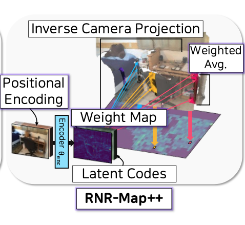
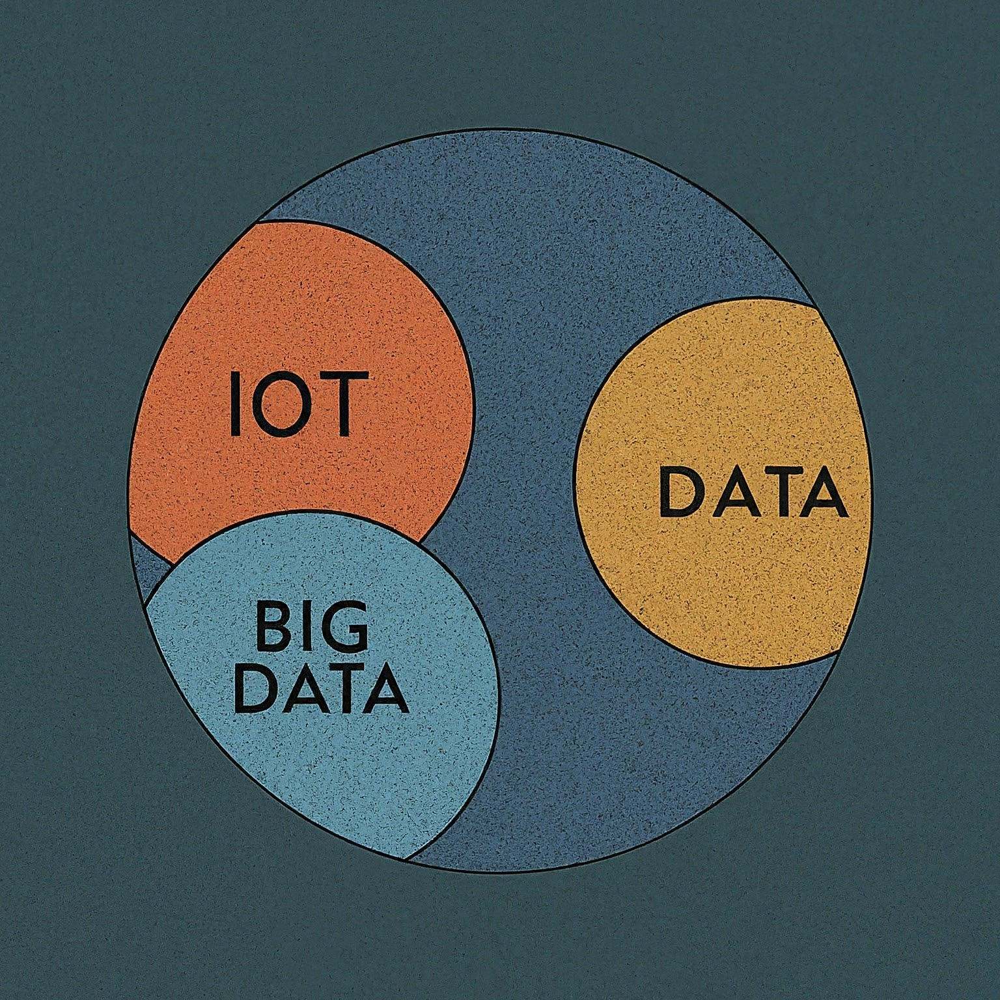
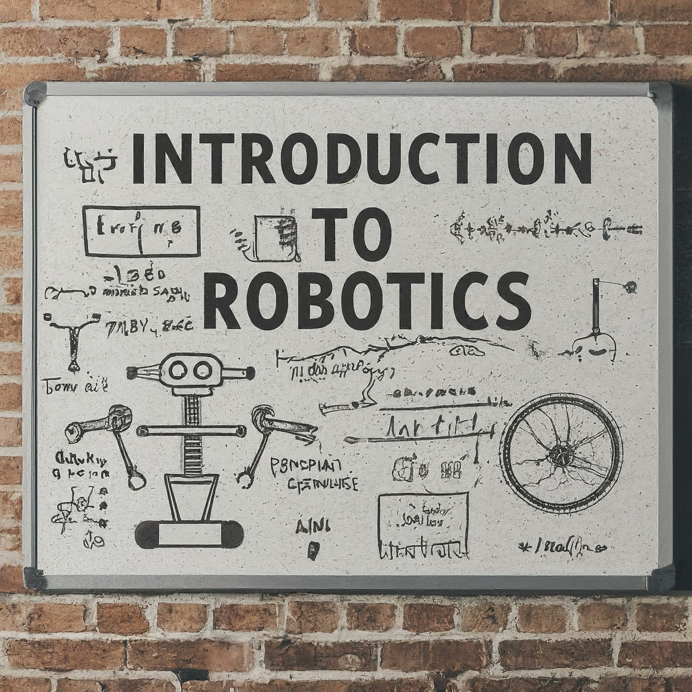

|
Howoong Jun I'm a Ph.D candidate at Robot Learning Lab (RLLab) of Seoul National University, supervised by Professor Songhwai Oh. Before the Ph.D course, I received B.S. degree and M.S. degree from Electrical and Computer Engineering, Seoul National University, 2017 and 2019 respectively. During my master's course, I was adviced by Professor Beomhee Lee. Previously, I was a research engineer/manager at SK Telecom in 2019-2022. Email / CV / Google Scholar / Github / Linkedin |

|
TL;DR 📝
Research 🔬I'm interested in visual application for robotics. Most of my research is about improving robot intelligence through visual information. Some papers are highlighted. |
|
|
Renderable Street View Map-Based Localization: Leveraging 3D Gaussian Splatting for Street-Level Positioning
Howoong Jun, Hyeonwoo Yu, and Songhwai Oh International Conference on Intelligent Robots and Systems (IROS), 2024 project page / paper Introduce a new method for street-level localization that first utilizes 3D Gaussian splatting in street-level localization problem |
|

|
RNR-Nav: A Real-World Visual Navigation System Using Renderable Neural Radiance Maps
Minsoo Kim, Obin Kwon Howoong Jun, and Songhwai Oh International Conference on Intelligent Robots and Systems (IROS), 2024 project page / paper Propose a robust visual localization and navigation framework in real-world environments, utilizing a mapping that directly integrates observed visual information into the bird-eye-view map |
|
|
EventPointNet: Robust Keypoint Detection with Neuromorphic Camera Data
Howoong Jun, Sangil Lee, and Songhwai Oh International Conference on Control, Automation and Systems (ICCAS), 2022 code / paper Propose a new network framework for keypoint detection using neuromorphic camera data |
|
|
Visually Grounding Language Instruction for History-Dependent Manipulation
Hyemin Ahn, Obin Kwon, Kyungdo Kim, Jaeyeon Jeong, Howoong Jun, Hongjung Lee, Dongheui Lee, and Songhwai Oh ICRA, 2022 project page / code & data / arXiv Propose history-dependent manipulation, which aims to enable a robot to refer to its task history when executing a series of pick-and-place operations instructed by language instructions |
|
|
Goal-driven Navigation for Non-holonomic Multi-robot System by Learning Collision
Howoong Jun, Hanjun Kim, Beomhee Lee, International Conference on Robotics and Automation (ICRA), 2019 Paper Propose a reinforcement learning based multi-robot collision avoidance approach by learning collision |
Professional Experience 🧑🏻💻 |
|
Autonomous and Systems Research Institute, Seoul National University
2023 ~ Current Researcher |
|
|
SK Telecom Co., Ltd
2019 ~ 2022 Manager & AI Researcher ICT R&D Center, New Mobility TF, Autonomous Vehicle Project AIX Center, Mobility Labs, HD Map Update Project (Road Learner) T3K, 5GX Location Labs, VLAM Project |
|
|
Seoho Electric Co., Ltd
2012 ~ 2014 Skilled Industrial Personnel |
Teaching Experience 🧑🏻🏫 |
|
Robot Programming
Instructor Department of Robotics, Kwangwoon University 2022 Spring |
|
|  |
IoT, AI, and Big Data (M2177.004900_001)
Teaching Assistant College of Engineering, Seoul National University 2021 Spring, Fall |
|  |
Introduction to Robotics (430.452A_001)
Teaching Assistant ECE, Seoul National University 2017 Spring |
Honors, Awards, Scholarships 🏆
|
|
This website is cloned from Jon Barron's page |